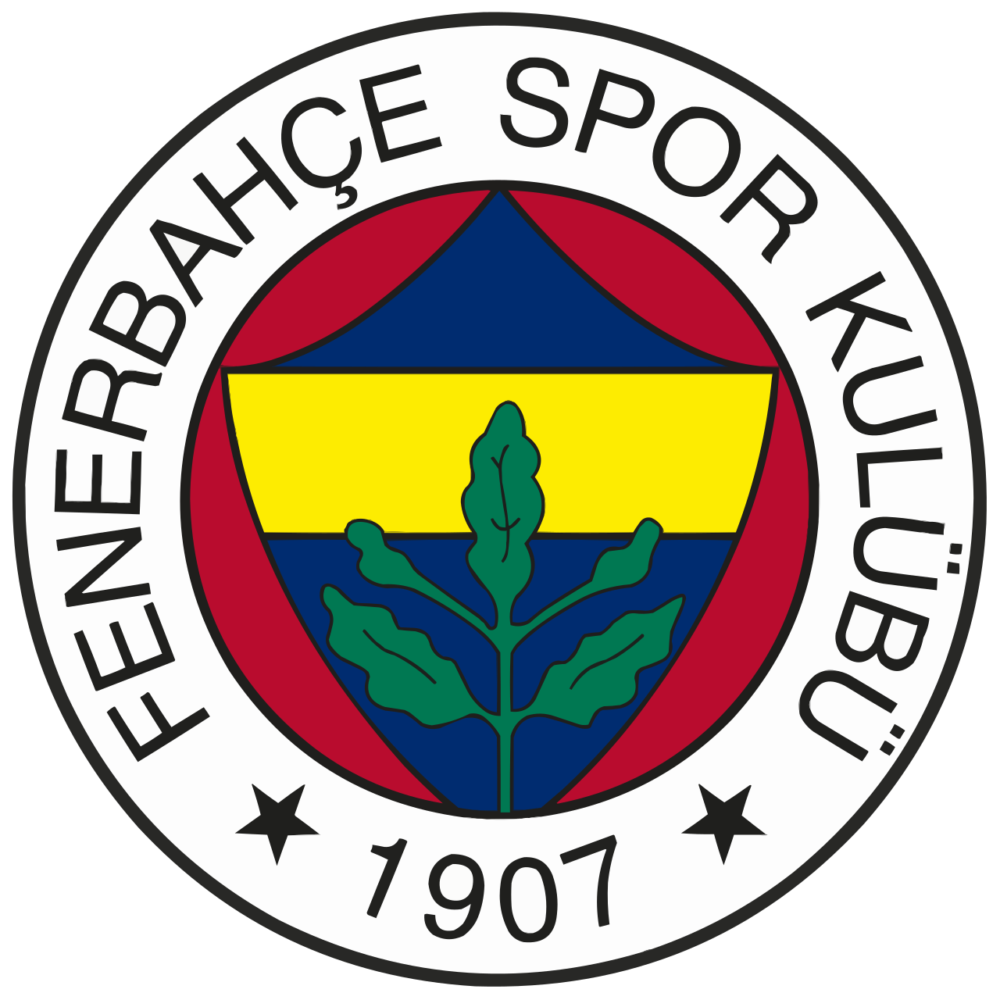
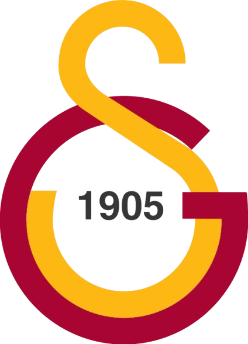

Fenerbahçe SK
Fenerbahçe SK je jedním ze dvou největších istanbulských rivalů Beşiktaşe a sídlí na asijském břehu Bosporu ve čtvrti Kadıköy, kde hraje své domácí zápasy na stadionu Ülker Stadyumu (Şükrü Saracoğlu) s kapacitou přes 47 tisíc diváků. Klub byl založen v roce 1907, vystupuje v tradiční žluto-modré kombinaci a jeho fanoušci mu přezdívají Sarı Kanaryalar (Žlutí kanárci). Vzájemná rivalita s Beşiktaşem představuje prestižní souboj evropské a asijské části Istanbulu, který se hraje již od listopadu 1924. Z dosavadních 365 vzájemných utkání vyhrál Beşiktaş 131 zápasů, 97 skončilo remízou a 137 ovládl soupeř z Kadıköy, přičemž nejvyšší vítězství Černých orlů se datuje do roku 1941 (7:1). V poslední době se však Beşiktaşu proti tomuto rivalovi mimořádně daří – v prosinci 2025 zvítězil v Tureckém poháru na půdě Fenerbahçe 2:1 a stejným výsledkem 2:1 tam vyhrál i v září 2026 v rámci 4. kola Süper Lig. Odveta na stadionu Beşiktaşe je na programu 14. února 2027.

Galatasaray SK
Galatasaray SK je nejstarším z istanbulských velkoklubů – vznikl už v roce 1905 ve čtvrti Beyoğlu a své domácí zápasy hraje na moderním stadionu RAMS Park v severní evropské části Istanbulu (čtvrť Seyrantepe) s kapacitou téměř 54 tisíc diváků. Klub s červeno-žlutými barvami a přezdívkou Aslanlar (Lvi) nebo Cimbom je historicky nejúspěšnějším tureckým týmem a jako jediný v zemi dokázal v roce 2000 vyhrát Pohár UEFA i Superpohár UEFA. Zápasy mezi Beşiktaşem a Galatasarayem jsou čistě evropským istanbulským derby, jehož historie sahá do srpna 1924, kdy Beşiktaş zvítězil 2:0. Celková bilance čítá 360 utkání, z nichž Beşiktaş vyhrál 116, remízou skončilo 115 duelů a 129krát se radoval Galatasaray. Nejpamátnějším moderním triumfem Beşiktaşe v tomto derby je drtivá výhra 5:0 ve finále Tureckého superpoháru v srpnu 2024. Zatímco březnové ligové derby v roce 2026 vyhrál těsně 1:0 Galatasaray, další velký souboj v rámci 13. kola Süper Lig čeká oba týmy už v pondělí 30. listopadu 2026 na domácím stadionu Beşiktaşe, přičemž odveta v RAMS Parku se odehraje 25. dubna 2027.

Fotbalové stadiony istanbulské trojky
Mapa zobrazuje domácí stadiony tří největších fotbalových klubů Istanbulu.